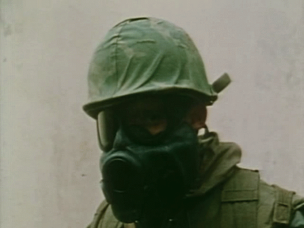
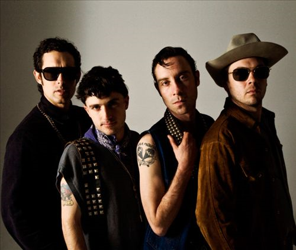
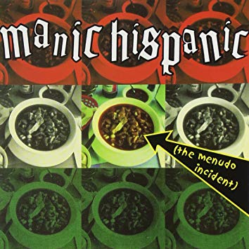

Music Junkie
Click photos for Albums!
The Black Lips

Up for the first band of the year is... The Black Lips! A band based in the Altanta, Georgia known for the garage
rock/punk sound they have some great songs such as "Boys In The Woods" and "Oh Katrina" they are always experimenting
on new sounds on each album! The Black Lips are a rare gem. There music is very energetic! And the lyrics are great
and childish the band is great at mixing different types of genres such as garage rock,punk, and pyschedelic. They always
put up a good live show, they always deliver a memorable show!
 The black Lips (2002)
The black Lips (2002)
The Black Lips (2002)
- 1.Throw It Away
- 2. Freakout
- 3. Ain´t No Deal
- 4. Stone Cold
- 5. I´ve Got A Knife
- 6. Down And Out
- 7. Steps
- 8. Fad
- 9. Sweet Kin
- 10. Crazy Girl
- 11. Everybody Loves A Cocksucker
- 12. Can´t Bring Me Down
- 13. You´re Dumb
- 14. Say Hello To The Postman
 Let It Bloom (2005)
Let It Bloom (2005)
1. Sea Of Blasphbemy
- 2. Can´t Dance
- 3. Boomerang
- 4. Hippie, Hippie, Hoorah
- 5. Not A Problem
- 6. Gung Ho
- 7. Everybody´s Doin´ It
- 8. Feelin Gay
- 9. Take Me Home (Back To Boone)
- 10. Gentle Violence
- 11. She´s Gone
- 12. Fairy Stories
- 13. Dirty Hand
- 14. Workin´
- 15. Punk Slime
- 16. Empassant
 Good Bad Not Evil (2007)
Good Bad Not Evil (2007)
1. I Saw A Ghost (lean)
- 2. O Katrina!
- 3. Veni Vidi Vici
- 4. It Feels Alright
- 5. Lock And key
- 6. How Do You Tell A Child That Someone Has Died
- 7. Bad Kids
- 8. Steps Right Up
- 9. Cold Hands
- 10. Off The Block
- 11. Slime And Oxygen
- 12. Transcendental Light
 200 Million Thousand (2009)
200 Million Thousand (2009)
1. Take My Heart
- 2. Drugs
- 3. Starting Over
- 4. Let it Grow
- 5. Trapped In A Basement
- 6. Short Fuse
- 7. I´ll Be With You
- 8. Big Black Baby Jesus Of Today
- 9. Again & Again
- 10. Old Man
- 11. The Drop I Hold
- 12. Body Combat
- 13. Elijah
- 14. I Saw A Ghost
 Arabia Mountain (2011)
Arabia Mountain (2011)
1. Family Tree
- 2. Modern Art
- 3. Spidey´s Curse
- 4. Mad Dog
- 5. Mr. Driver
- 6. Bicentennial Man
- 7. Go Out And Get It
- 8. Raw Meat
- 9. Bone Marrow
- 10. The Lie
- 11. Time
- 12. Dumpster Dive
- 13. New Direction
- 14. Noc-A-Homa
- 15. Don´t Mess Up My Baby
- 16. You Keep On Runninh
- 17. Wildest Dreams
- 18. Sing-A-Long
 Underneath The Rainbow(2014)
Underneath The Rainbow(2014)
1. Drive By Buddy
- 2. Smiling
- 3. Make You Mine
- 4. Funny
- 5. Dorner Party
- 6. Justice For All
- 7. Boys In The Wood
- 8. Waiting
- 9. Do The Vibe
- 10. I Don´t Wanna Go Home
- 11. Dandelion Dust
- 12. Dog Years
 Satan´s Graffiti Or God´s Art? (2017)
Satan´s Graffiti Or God´s Art? (2017)
1. Overture: Sunday Mourning
- 2. Occidental Front
- 3. Can´t Hold On
- 4. The Last Cul De Sac
- 5. Crystal Nigth
- 6. Squating In Heaven
- 7. Rebel Intuition
- 8. Wayne
- 9. We Know
- 10. In My Mind There´s A Dream
- 11. Lucid Nightmare
- 12. Come Ride With Me
- 13. It Won´t Be Long
- 14. Loser´s lament
- 15. Finale: Sunday Mourning
Manic Hispanic
 Let's crack a cold ones for the Vatos... Manic Hispanic is a 6 piece band they constist of the lengendary guitarist Steve Soto,Mike Garbono,Mo grease, Mad Ralphie,Oso, Efren Martinez, they are known for their hilarious cover songs of famous punk songs, such as "The KKK Took My Baby Away" they covered this song and they did a amazing job doing so. There band is known as a cover band but they do it so good sometimes. Their shows were always amazing they always put up a amazing show they always came through and delivered. The band is overall a amazing band. You should give them a hear if you love punk music with a funny twist!. (R.I.P. Gaby) (R.I.P. Steve Soto)
Let's crack a cold ones for the Vatos... Manic Hispanic is a 6 piece band they constist of the lengendary guitarist Steve Soto,Mike Garbono,Mo grease, Mad Ralphie,Oso, Efren Martinez, they are known for their hilarious cover songs of famous punk songs, such as "The KKK Took My Baby Away" they covered this song and they did a amazing job doing so. There band is known as a cover band but they do it so good sometimes. Their shows were always amazing they always put up a amazing show they always came through and delivered. The band is overall a amazing band. You should give them a hear if you love punk music with a funny twist!. (R.I.P. Gaby) (R.I.P. Steve Soto)

Mommy´s Little Cholo/I Don´t Care About You (1995)
- 1. Mommy´s Little Cholo
- 2. I Don´t Care About You

The Menudo Incident (1995)
- 1. Wasted
- 2. East L.A.
- 3. 12 X U
- 4. Barrio Land
- 5. God Save The Queen
- 6. New Rosa
- 7. Mexican Society
- 8. Jet Muchacho
- 9. I Got A Right
- 10. Medley (Rodney On The ROQ)
- 11. Before the Next Tear Drop Falls
- 12. Manic Hispanic
- 13. Poem

The Recline Of Mexican Civilization (2001)
- 1. Alberto's
- 2. Mexican Tar
- 3. Get Them Immigrated
- 4. Uncles Chato's Garden
- 5. Brown Man In O.C. jail
- 6. If The Vatos Are Untied
- 7. Mommy's Little Cholo
- 8. Bored Of You Ese
- 9. Ruby Cholo
- 10. Lynch The Landlord
- 11. Brown Girl
- 12. Tijuana Must Fall

Mijo Goes To Jr. College (2003)
- 1. Trippin On Mi Ruca
- 2. Brand New Impala
- 3. Tio´s Got A Secret
- 4. Cruise
- 5. Barrio Love
- 6. Creeper Is A Lowrider
- 7. My Homeboy Is A Joto
- 8. Big Hienas
- 9. Menudo Morning Nightmare
- 10. The I.N.S. Took My Novia Away
- 11. La Crushe
- 12. Get Up Your Late
- 13. She Turned Into La Llorona
- 14. Lupe, I´m Free
- 15. Code Brown
- 16. I Want To Be A Cholo
 Grupo Sexo (2006)
Grupo Sexo (2006)
- 1. Welcome To Paramount
- 2. Grupo Sexo
- 3. Big Chorizo
- 4. Lupe Lupe Lupe
- 5. I´m Just A Cholo
- 6. Stuck In The Bano
- 7. Homo Depot
- 8. Tijuana Affair
- 9. Lowered Machine
- 10. Out Of Step(With La Raza)
- 11. 63
Page 2